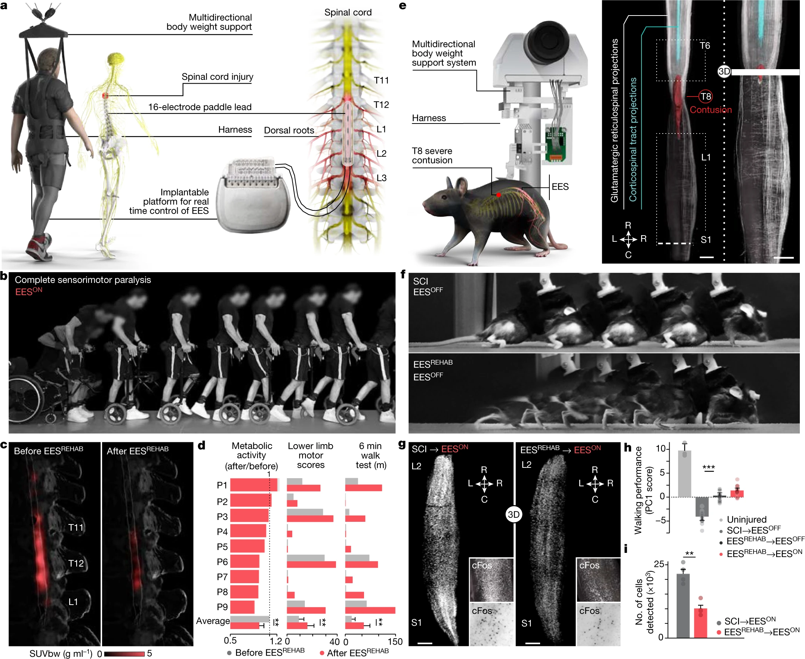

Mid - Term 소논문 발표
자연생물학과, 학부생, 20226842 홍길동
<사진 A>
캠릿브지 대학의 연결구과에 따르면, 한 단어 안에서 글자가 어떤 순서로 배되열어 있는지는 중요하지 않고, 첫 번째와 마지막 글자가 올바른 위치에 있는 것이 중하요다고 한다. 나머지 글들자은 완전히 엉진망창의 순서로 되어 있라을지도 당신은 아무 문제 없이 이것을 읽을 수 있다. 왜하냐면, 인간의 두뇌는 모든 글자를 하하나나 읽는 것이 아니라 단어 하나를 전체로 인하식기 때이문다.
<사진 B>
본래 2000년대 초부터 미국에서 이메일로 돌던 글을 번역한 것으로 원문은 능률교육 고1 교과서 1과 본문에 실려있기도 하다. 한국에서는 2007년 무렵에 펌글로 돌기 시작했다. 이후로 워낙에 유명해져서 첫 글자와 마지막 글자를 그대로 둔 채 가운데 글자만 순서를 바꾸는 아나그램을 캠릿브지 대학의 연결구과라고 부르기도 한다.
<사진 C>단어 우월 효과(word superiority effect)라고 하는 심리 효과에 의한 현상이다. 여기서 단어 우월 효과란, 사람이 단어를 인식할 때 개별 문자의 집합으로 인식하는 게 아닌 단어의 총체적 이미지로 인식하는 효과를 뜻한다. 단어 우월 효과의 등장 이전엔 개별 문자를 인식함으로써 단어를 인식한다고 생각해왔기 때문에 이 이론의 등장은 단어 인식에 대한 큰 변화를 가져왔다.
<본론>
중국어나 일본어와 같은 한자 문화권의 언어에도 같은 개념이 적용되는데, 해당 국가들의 화자들은 문장 속에서 한자 한 글자를 볼 때 전체적인 실루엣과 윤곽이 순간적으로 가져다 주는 이미지로 읽는 것이지, 한자의 획 하나하나까지 체크해가며 어떤 한자인지 정확히 파악하는 식으로 글을 읽지 않는다. 해당 외국어를 처음 접하는 한국인이 한자와 직면할 때 지레 겁먹는 요인 중 하나이기도 하다. 또한 한자를 읽을 수 있어도 쓰지 못하는 이유이기도 하다. 일본어는 한자가 많을수록 읽기 편해진다고 이야기하는 것은 이 이유에서이다.
조금 다른 얘기이긴 하지만, 결과물이 비슷해서 혼동되는 경우도 있다. 예를 들어 '위키피디아'를 처음 듣는 사람이 '~피아' 같이 기존에 흔히 듣던 명명법과 혼동하여 '위키디피아'로 잘못 알아들은 후 그걸 계속 위키피디아(o)가 아닌 위키디피아(x)로 사용하게 되는 것이나, '위키리크스'를 처음 들었을 때에 '~리스크'가 익숙했던 나머지 혼동하여 위키리스크(x)로 잘못 쓰게 되는 경우와는 다른 얘기이다. 스튜디오와 어스에 익숙해져서 잘못듣게 되는 스튜어디스와 스튜디어스의 경우도 있다.
더 자세한 설명은 비록 영문이긴 하나 케임브리지 대학교 공식 홈페이지에서 찾아볼 수 있다. 정리와 설명이 매우 잘 되어있다.